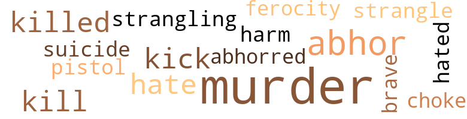
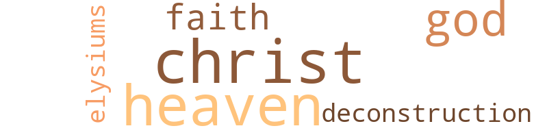

Maleficium, by Atkins, Russel (1971)
5 music-related terms matched in this text.
Most frequent terms in this topic: music (2); dance (1); instrument (1); chapter (1)
chapter.n.01
Definition: a subdivision of a written work; usually numbered and titled
| word | sentence |
|---|---|
| chapter | Many more pages to this chapter ? |
dance.n.01
Definition: an artistic form of nonverbal communication
| word | sentence |
|---|---|
| dance | He 's taking her to dinner , to the dance ! |
music.n.01
Definition: an artistic form of auditory communication incorporating instrumental or vocal tones in a structured and continuous manner
| word | sentence |
|---|---|
| music | Repetition : In music , yes , but in hands , legs , lips , et al. , no . |
| music | I 've written verses ; a few pieces of music ; a few theoretical works . |
musical_instrument.n.01
Definition: any of various devices or contrivances that can be used to produce musical tones or sounds
| word | sentence |
|---|---|
| instrument | Now old Jeff Clyde : I 'd make him my instrument for neighborhood . |
29 violence-related terms matched in this text.
Most frequent terms in this topic: murder (7); abhor (3); hate (2); kill (2); killed (2)
abhor.v.01
Definition: find repugnant
| word | sentence |
|---|---|
| abhorred | ( Besides , I abhorred the fools . ) |
| abhor | I -- I cracked up a minute there - Let me tell you this of foods I abhor its meaning . |
| abhor | Good friends abhor my not having a job . |
| abhor | Though I abhor the job boob , I admire his naivete . |
ferocity.n.01
Definition: the property of being wild or turbulent
| word | sentence |
|---|---|
| ferocity | She came cramming out of doors -- Effie 's mother - with the ferocity of a bear . |
gag.v.06
Definition: cause to retch or choke
| word | sentence |
|---|---|
| choke | I I think my guests arrive - Lottie do n't let me have to choke you into understanding . |
hate.v.01
Definition: dislike intensely; feel antipathy or aversion towards
| word | sentence |
|---|---|
| hated | I hated them with a vengeance too severe to be endured . |
| hate | Nothing do I hate more than rain that does n't arrive . |
| hate | They hate - it 's entirely up to you whether you believe this -- they hate that about me that wo n't adjust -- that " big . " |
injury.n.01
Definition: any physical damage to the body caused by violence or accident or fracture etc.
| word | sentence |
|---|---|
| harm | Listen : Good things , things that do no harm , are not the things to watch . |
kick_back.v.02
Definition: spring back, as from a forceful thrust
| word | sentence |
|---|---|
| kick | But dad , kick this around for luck : the driver of the Olds had whipped through a traffic signal . |
| Kick | Kick that around a little , dad . |
kill.v.10
Definition: cause the death of, without intention
| word | sentence |
|---|---|
| killed | Judge for yourself : The daughter of the woman across the street killed herself . |
| killed | It 's common knowledge that truck drivers - Oh , killed , yes , yes , many of them - poor men - have , i.e. , died thus . |
| kill | No , no I would as soon kill you , Richard , as I would Mack . |
| kill | How often had you to kill the centipede , the roach with bare hand , to name but a few unavoidabilities ? |
murder.n.01
Definition: unlawful premeditated killing of a human being by a human being
| word | sentence |
|---|---|
| murder | You do want to murder your wife or your husband ? |
| murder | You 're crummy at murder . |
| murder | ( Anybody cut to instruct professionally in murder ! |
| murder | I 've taught murder for years and you 're the worst ! |
| murder | I believe his murder was done Tuesday , exactly four days ago . |
| murder | This aside , I have a murder to commit next month . |
| murders | He has done , oh , several murders , expertly . |
| murder | ( Needed at a time like this : a way to commit murder . ) " |
pistol.n.01
Definition: a firearm that is held and fired with one hand
| word | sentence |
|---|---|
| pistol | Who said anything about a pistol ? |
strangle.v.01
Definition: kill by squeezing the throat of so as to cut off the air
| word | sentence |
|---|---|
| strangle | We 'll have to strangle the victim . |
| strangling | He had no way of knowing - this " friend " of Larry 's - how I thought more than once of strangling the dirty truth out of him . |
suicide.n.01
Definition: the act of killing yourself
| word | sentence |
|---|---|
| suicide | I 'd be spared the rather unpleasant direct difficult act of a suicide and yet would be doing so by letting the germ consume me - if germs can be said to do that . |
weather.v.01
Definition: face and withstand with courage
| word | sentence |
|---|---|
| brave | When Larry , a brave man , died by his own hand in an intelligently handled death , every compassion in the book was expressed . |
11 religion-related terms matched in this text.
Most frequent terms in this topic: Heaven (3); Christ (3); God (2); deconstruction (1); faith (1)
deconstruction.n.01
Definition: a philosophical theory of criticism (usually of literature or film) that seeks to expose deep-seated contradictions in a work by delving below its surface meaning
| word | sentence |
|---|---|
| deconstruction | Immediate deconstruction in the lines of the countenance ? |
eden.n.01
Definition: any place of complete bliss and delight and peace
| word | sentence |
|---|---|
| Heaven | That window with a vine outside - in Heaven 's name , will you bring it ? |
| Heaven | How in Heaven 's name - ! |
| Heaven | Heaven knows who ? |
elysium.n.02
Definition: (Greek mythology) the abode of the blessed after death
| word | sentence |
|---|---|
| Elysiums | If so , we seek highly disparate Elysiums . |
god.n.03
Definition: a man of such superior qualities that he seems like a deity to other people
| word | sentence |
|---|---|
| God | God knows how she thought we would eat . |
| God | I would watch - watch for him to gasp , to lean on the shovel suddenly , look up , look stark and with God 's help of me * fall down dead . |
messiah.n.01
Definition: any expected deliverer
| word | sentence |
|---|---|
| Christ | Bludgeoning 's out I Give me that , for Christ 's sake ! |
| Christ | Oh , for Christ 's sake ! |
| Christ | Lips , backs , legs , buttocks , clieeks -- oh Christ M ! |
religion.n.01
Definition: a strong belief in a supernatural power or powers that control human destiny
| word | sentence |
|---|---|
| faith | He forgot he had a pack until he forgot and brought it out -- no , until he forgot he 'd said he did not have one -- no , that 's -- that is n't exactly - Honey , do n't you have to have more faith in people ? |